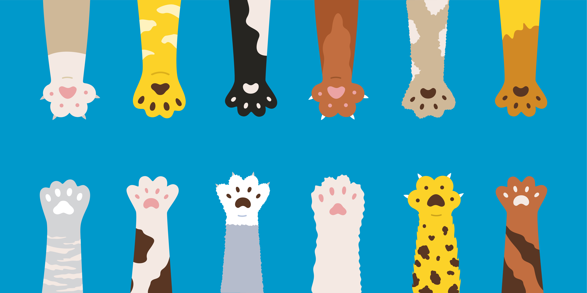

Alimentação
Ração para cães e gatos, potes e alimentos adequados. Consulte o abrigo antes de separar os produtos.
Associação de Defesa Animal / TCC
Uma interface para aproximar pessoas da causa animal. Conheça formas de ajudar e explore uma jornada de adoção responsável.
Demonstração de projeto escolar. Não recebe doações nem envia pedidos.

Pequenos gestos.01 / Faça parte
Ração para cães e gatos, potes e alimentos adequados. Consulte o abrigo antes de separar os produtos.
Cobertores, toalhas, itens de limpeza e tapetes higiênicos ajudam na rotina de cuidado.
Compartilhar campanhas e participar das atividades pode aproximar os animais de novas famílias.
02 / Adoção responsável
Adotar pede planejamento: espaço, tempo e disposição para os cuidados diários. Explore abaixo o fluxo demonstrativo criado para este trabalho.
03 / Do trabalho escolar à experiência
Releitura do ADAproject, trabalho de conclusão de curso. A identidade da causa animal continua aqui, com navegação mais clara, adaptação ao celular e uma simulação interativa do fluxo de adoção.